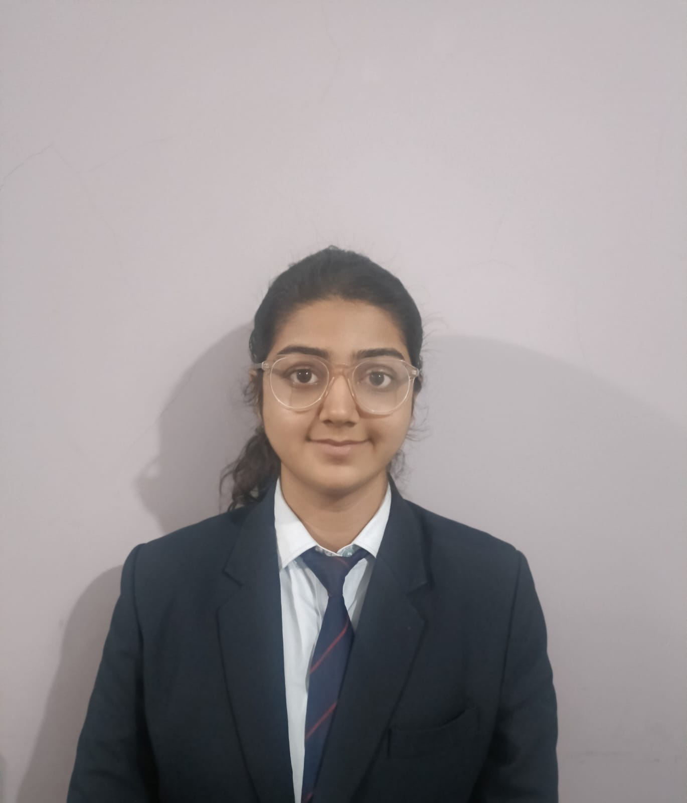

Passionate about problem-solving with a focus on full-stack development and cybersecurity. I take initiative, learn quickly, and turn ideas into practical, impactful solutions.

I am currently pursuing my B.Tech in Computer Science at Acropolis Institute of Technology and Research with a specialization in Cyber Security (CY branch).
My long-term strategy involves combining multiple domains—specifically Cyber Security, Ethical Hacking, and Java Full Stack Development. I believe that building secure applications is just as important as building scalable ones.
I am highly ambitious, growth-driven, and focused on practical, real-world projects. Top companies look for multi-domain learning, and I am actively bridging the gap between security engineering and full-stack solutions.
B.Tech CS (Cyber Security)
Java Full Stack + Security
Security Product Builder
Real-world solutions aimed at solving enterprise and societal problems.
A high-level security project focused on retina-based authentication to solve enterprise security vulnerabilities. Includes a complete monitoring and authentication system.
A real-time response platform connecting police, hospitals, and emergency services with the goal of reaching out for help within 5 minutes of a crisis.
A full-stack coding platform inspired by CodeChef and LeetCode, featuring a secure login system, performance tracking, dynamic quizzes, and certificate generation.
A smart system connecting hotels, restaurants, and households with NGOs to efficiently redistribute surplus food to people in need.
Organizing AI workshops and technical events. Collaborating with faculty to bridge the gap between students and modern tech ecosystems.
Managing digital presence, creating engagement driven content, and leading promotional campaigns for club activities.
Consistently participating in technical and coding challenges to hone problem solving abilities in competitive environments.